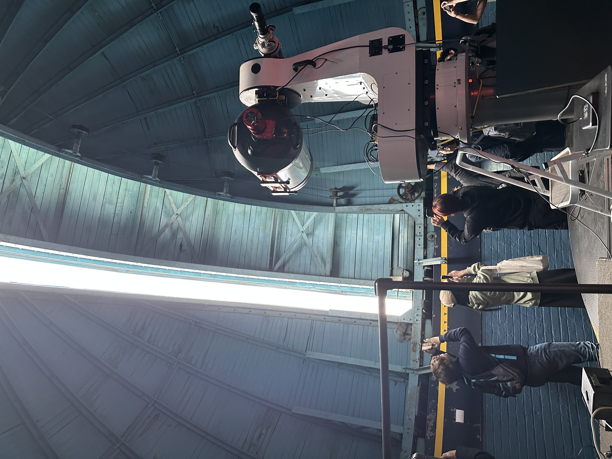

STEM Prison Education Program
To enhance the Prison Education Program (PEP) courses that Columbia and other college providers currently offer, we offer students the opportunity to discuss STEM topics not usually covered by those courses. This program is a non-credit-granting addition to the courses already in place. The target audience are students already enrolled in other PEP courses, who have demonstrated a motivation to learn, but each session is open to all. These events are one-off discussions on a given topic with no linking theme other than STEM. This allows them to be far less frequent than the classes offered, with a target of 8 sessions per school semester (approximately every other week). The events are led by 1-2 STEM researchers at Columbia University each time, with faculty, post-docs, and graduate students being eligible.
So far, we have run this program or a precursor version of it at the Metropolitan Detention Center in Brooklyn (MDC Brooklyn) since Spring 2024. Working with the prison's education department, we have settled on a cadence of 3 hour classes every other week. In both spring and fall 2025, we held sessions on astronomy, neuroscience, environmental science, evolution, and A.I., with different instructors coming in every time.
Originally, this program was funded by the National Osterbrock Leadership Program, but starting in spring 2025 it will be run entirely by Columbia University volunteers. In the future, we hope to expand this program to potentially be credit-granting (in the mold of the Frontiers of Science course at Columbia) and expand to more prisons in the NYC area. Please reach out to our outreach email (astro.outreach@gmail.com) or k.tavangar@columbia.edu if you are interested in getting involved!
Student Training in Astronomy Research
In the Columbia Student Training in Astronomy Research (STAR) program, high school students get paid to learn how to conduct research by working directly with Columbia graduate students, postdocs, and faculty on novel research. This program is only open to students enrolled in Columbia Secondary School.
Class Visits
We have school groups come to campus to tour the Rutherfurd Observatory to explore the historic dome and learn about what astronomy has been done from our roof.
